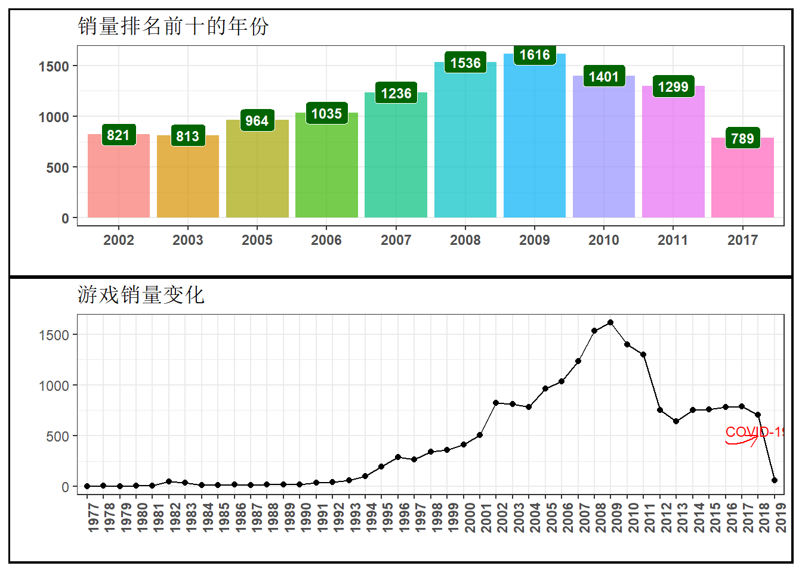
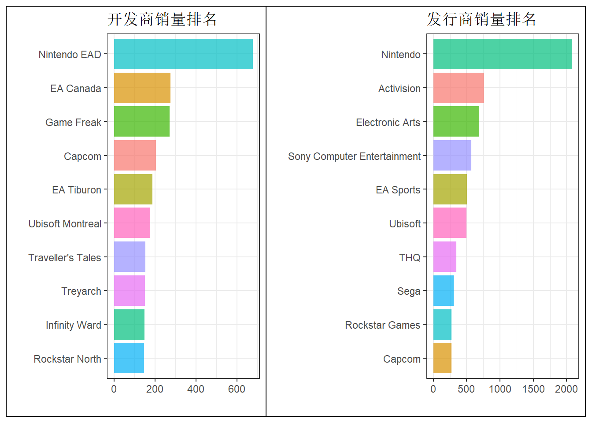
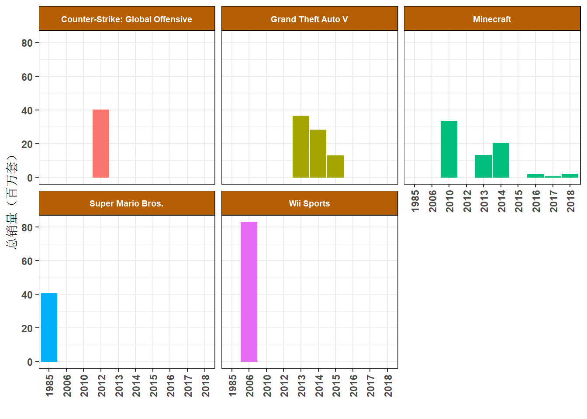
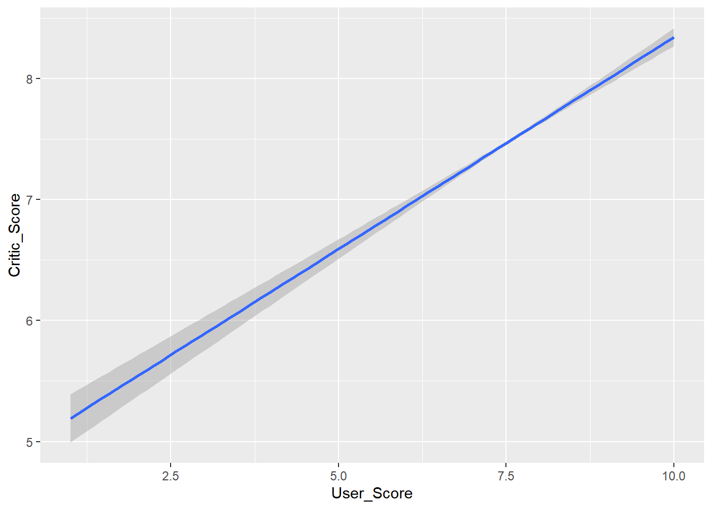

1 Video Games Sales
1.1 准备
file <- "D:/Tools/Rwork/0.Study R/kaggle-project/data/vgsales.csv"
df <- read_csv(file)## Rows: 19600 Columns: 9## -- Column specification --------------------------------------------------------
## Delimiter: ","
## chr (4): Name, Platform, Publisher, Developer
## dbl (5): Rank, Critic_Score, User_Score, Total_Shipped, Year##
## i Use `spec()` to retrieve the full column specification for this data.
## i Specify the column types or set `show_col_types = FALSE` to quiet this message.str(df)## spec_tbl_df [19,600 x 9] (S3: spec_tbl_df/tbl_df/tbl/data.frame)
## $ Rank : num [1:19600] 1 2 3 4 5 6 7 8 9 10 ...
## $ Name : chr [1:19600] "Wii Sports" "Super Mario Bros." "Counter-Strike: Global Offensive" "Mario Kart Wii" ...
## $ Platform : chr [1:19600] "Wii" "NES" "PC" "Wii" ...
## $ Publisher : chr [1:19600] "Nintendo" "Nintendo" "Valve" "Nintendo" ...
## $ Developer : chr [1:19600] "Nintendo EAD" "Nintendo EAD" "Valve Corporation" "Nintendo EAD" ...
## $ Critic_Score : num [1:19600] 7.7 10 8 8.2 8.6 10 8 9.4 9.1 8.6 ...
## $ User_Score : num [1:19600] 8 8.2 7.5 9.1 4.7 7.8 8.8 8.8 8.1 9.2 ...
## $ Total_Shipped: num [1:19600] 82.9 40.2 40 37.3 36.6 ...
## $ Year : num [1:19600] 2006 1985 2012 2008 2017 ...
## - attr(*, "spec")=
## .. cols(
## .. Rank = col_double(),
## .. Name = col_character(),
## .. Platform = col_character(),
## .. Publisher = col_character(),
## .. Developer = col_character(),
## .. Critic_Score = col_double(),
## .. User_Score = col_double(),
## .. Total_Shipped = col_double(),
## .. Year = col_double()
## .. )
## - attr(*, "problems")=<externalptr>head(df, 3)## # A tibble: 3 x 9
## Rank Name Platform Publisher Developer Critic_Score User_Score Total_Shipped
## <dbl> <chr> <chr> <chr> <chr> <dbl> <dbl> <dbl>
## 1 1 Wii ~ Wii Nintendo Nintendo~ 7.7 8 82.9
## 2 2 Supe~ NES Nintendo Nintendo~ 10 8.2 40.2
## 3 3 Coun~ PC Valve Valve Co~ 8 7.5 40
## # ... with 1 more variable: Year <dbl>数据共包括11列，包含了从1977年~2020年中的游戏销量数据，具体变量说明如下表所示：
table_var <- read_excel("data-intro.xlsx", sheet = 3)
kable(table_var, align = "c") %>%
kable_classic()| 变量 | 说明 |
|---|---|
| Rank | 销量排名 |
| Name | 游戏名称 |
| Platform | 发型平台 |
| Publisher | 发行商 |
| Develooper | 开发商 |
| Critic_Score | 从业人评分 |
| User_Score | 用户评分 |
| Total_shipped | 总销量(百万套) |
| Year | 发型年份 |
1.2 缺失值处理
summary(df)## Rank Name Platform Publisher
## Min. : 1 Length:19600 Length:19600 Length:19600
## 1st Qu.: 4899 Class :character Class :character Class :character
## Median : 9798 Mode :character Mode :character Mode :character
## Mean : 9799
## 3rd Qu.:14698
## Max. :19598
##
## Developer Critic_Score User_Score Total_Shipped
## Length:19600 Min. : 0.800 Min. : 1.000 Min. : 0.0100
## Class :character 1st Qu.: 6.100 1st Qu.: 6.300 1st Qu.: 0.0500
## Mode :character Median : 7.300 Median : 7.200 Median : 0.1600
## Mean : 7.035 Mean : 6.995 Mean : 0.5511
## 3rd Qu.: 8.200 3rd Qu.: 8.000 3rd Qu.: 0.4600
## Max. :10.000 Max. :10.000 Max. :82.9000
## NA's :9631 NA's :17377
## Year
## Min. :1977
## 1st Qu.:2004
## Median :2008
## Mean :2008
## 3rd Qu.:2012
## Max. :2020
## sum(is.na(df))## [1] 27010n_miss(df)## [1] 27010数据中有27010个缺失值，而缺失值主要存在与Critic_Score和User_Score，主要原因在于并不是每个用户和从业者都会对游戏进行评分。
需要对其进行一些处理，未打分的我们认为其打分为5.0分，即使用5.0代替所有缺失值。
# 采用每一列的众数替换该列的缺失值
df <- df %>%
map_dfc(~replace_na(.x, rstatix::get_mode(.x)[1]))1.3 描述性分析
描述性统计是一个统计范围，它应用各种技术来描述和总结任何数据集，并研究观察到的数据的一般行为，以促进问题的解决。这可以通过频率表、图形和集中趋势的度量来完成，例如平均值、中位数、众数、离散度量（例如标准偏差、百分位数和四分位数）。
由于2020年只有前半段的数据，我们分析时将2020年的数据剔除，以便更好的分析对比各年份的差异。同时剔除
Rank列。
df <- df %>%
filter(Year != 2020) %>%
select(-Rank)
df$Year <- factor(df$Year)1.3.1 常规分析
1.3.1.1 哪一年的游戏总销量最高
df_shipped <- df %>%
select(Year, Total_Shipped) %>%
group_by(Year) %>%
summarise(count = n()) %>%
arrange(desc(count))
p1 <- ggplot(head(df_shipped,10), aes(x = Year, y = count,
fill = Year)) +
geom_bar(stat = "identity", alpha = 0.7) +
geom_label(aes(label = count), fontface = "bold",
fill = "#006400",
color = "white",
size = 3) +
theme_bw() +
labs(x = " ", y = " ") +
ggtitle("销量排名前十的年份") +
theme(legend.position = "none",
plot.background = element_rect(color = "black", size = 1.1),
axis.text.x = element_text(face = "bold"),
axis.text.y = element_text(face = "bold"),
axis.title = element_text(face = "bold")
)
p2 <- ggplot(df_shipped, aes(x = Year, y = count, group = 1)) +
geom_point() +
geom_line() +
theme_bw() +
ggtitle("游戏销量变化") +
labs(x = " ", y = " ") +
theme(plot.background = element_rect(color = "black", size = 1.1),
axis.text.x = element_text(face = "bold", angle = 90)) +
geom_curve(x = 40, y = 450, xend = 42, yend = 500,
angle = 35,
arrow = arrow(length = unit(0.3, "cm")),
color = "red") +
annotate("text", x = 42, y = 550,
label = "COVID-19", color = "red", size = 3)
p1/p2
由图??可以看出：
- 销量排名前十的年份均在21世纪，且2009年销量最高。2009年之后，游戏销量逐渐下滑，在2011年左右趋于平稳。
- 2018~2019年，游戏销量急剧下滑。猜测原因为新冠肺炎疫情的爆发导致的游戏产能下降、经济下滑，从而大幅影响了游戏的销量。
下面我们将具体看一下各游戏平台的表现。
1.3.1.2 游戏平台排名（销量、游戏数量）
df_platform <- df %>%
select(Platform, Total_Shipped) %>%
group_by(Platform) %>%
summarize(amount = sum(Total_Shipped)) %>%
arrange(desc(amount)) %>%
head(10)
p3 <- ggplot(df_platform, aes(x = reorder(Platform, amount), y = amount,
fill = Platform)) +
geom_bar(stat = "identity", alpha = 0.7) +
labs(x = " ", y = " ") +
ggtitle("游戏平台排名", subtitle = "平台销量排名") +
coord_flip() +
theme_bw() +
theme(legend.position = "none",
axis.text = element_text(face = "bold"),
plot.title = element_text(face = "bold"),
plot.background = element_rect(color = "black"))
df_platform2 <- as.data.frame(table(df$Platform)) %>%
rename(Platform = Var1) %>%
arrange(desc(Freq)) %>%
head(10)
p4 <- ggplot(df_platform2, aes(x = reorder(Platform, Freq), y = Freq,
fill = Platform)) +
geom_bar(stat = "identity", alpha = 0.7) +
labs(x = " ", y = " ") +
ggtitle("游戏平台排名", subtitle = "平台游戏数量排名") +
coord_flip() +
theme_bw() +
theme(plot.background = element_rect(color = "black"),
legend.position = "none",
plot.title = element_text(face = "bold"),
axis.text = element_text(face = "bold"))
p3|p4图1.1: 游戏平台排名
由图1.1可以看出：
- PS2不愧是有史以来最成功的的家用主机，发行在其上的游戏销量排名第一、游戏数量排名第二。
- PC游戏仍有一定竞争力。
- 御三家统治了主机游戏。
下面我们看一下游戏开发商的情况。
1.3.1.3 开发商和发行商排名
df_developer <- df %>%
select(Developer, Total_Shipped) %>%
group_by(Developer) %>%
summarise(amount = sum(Total_Shipped)) %>%
arrange(desc(amount)) %>%
head(10)
p5 <- ggplot(df_developer, aes(x = reorder(Developer, amount), y = amount,
fill = Developer)) +
geom_bar(stat = "identity", alpha = 0.7) +
coord_flip() +
ggtitle("开发商销量排名") +
labs(x = " ", y = "") +
theme_bw() +
theme(legend.position = "none",
plot.background = element_rect(color = "black"))df_publisher <- df %>%
select(Publisher, Total_Shipped) %>%
group_by(Publisher) %>%
summarise(amount = sum(Total_Shipped)) %>%
arrange(desc(amount)) %>%
head(10)
p6 <- ggplot(df_publisher, aes(x = reorder(Publisher, amount), y = amount,
fill = Publisher)) +
geom_bar(stat = "identity", alpha = 0.7) +
coord_flip() +
ggtitle("发行商销量排名") +
labs(x = " ", y = "") +
theme_bw() +
theme(legend.position = "none",
plot.background = element_rect(color = "black"))
p5|p6 - 任天堂作为开发商和发行商均独占鳌头。 - Game Freak依靠王牌IP精灵宝可梦占据开发商销量第三名。 - 大家耳熟能详的游戏开发商和发行商均有上榜。
1.4 探索性分析
在统计学中，探索性数据分析 (EAD) 是一种分析数据集以总结其主要特征的方法，通常使用可视化方法。
1.4.1 世界最畅销游戏
1.4.1.1 最畅销的5个游戏
那么，1977年~2019年间，到底哪个游戏销量是最高的呢？
options(repr.plot.width = 20, repr.plot.height = 8)
df_games <- df %>%
select(Name, Total_Shipped) %>%
group_by(Name) %>%
summarise(amount = sum(Total_Shipped)) %>%
arrange(desc(amount)) %>%
head(5)
p7 <- ggplot(df_games, aes(x = reorder(Name, amount), y = amount,
fill = Name)) +
geom_col(aes(alpha = 0.9)) +
geom_label(aes(label = amount), size = 3,
fontface = "bold",
color = "white") +
labs(x = " ", y = " ") +
coord_flip() +
theme_bw() +
theme(legend.position = "none",
plot.background = element_rect(color = "black", size = 1.1),
axis.text.x = element_text( face = "bold"),
axis.text.y = element_text(face = "bold"))
p8 <- ggplot(df_games, aes(x = Name, y = amount)) +
geom_line(alpha = 0.7, group = 1) +
geom_point(aes(fill = Name), shape = 2) +
theme_bw()+
theme(legend.position = "none",
plot.background = element_rect(color = "black"),
axis.text.x = element_text(face = "bold")) +
labs(x = "", y = "") +
coord_polar()
p7|p8图1.2: 游戏总销量排名
由图1.2可知：
- 游戏销量排名前3的游戏为：Wii Sports、GTA5和我的世界。
- GTV5和我的世界在多个游戏平台均有发售，Wii Sports为任天堂平台独占。
- 任天堂游戏平台发售的游戏占前十的大多数，任天堂就是世界的主宰！
1.4.1.2 最畅销的5个游戏逐年分布
df_games_top5 <- df %>%
filter(Name == "Wii Sports" |
Name == "Grand Theft Auto V"|
Name == "Minecraft"|
Name == "Super Mario Bros."|
Name == "Counter-Strike: Global Offensive") %>%
select(Name, Year, Total_Shipped)
ggplot(df_games_top5, aes(x = Year, y = Total_Shipped)) +
geom_bar(stat = "identity", aes(fill = Name,
color = Name),
alpha = 8) +
facet_wrap(~Name) +
labs(x = "", y = "总销量（百万套）") +
theme_bw()+
theme(legend.position = "none",
strip.text.x = element_text(
margin = margin(7, 7, 7, 7), size = 7,
face = "bold", color = "white"),
strip.background = element_rect(fill = "#B45F04",
color = "black"),
plot.title = element_text(face = "bold"),
axis.text.x = element_text(face = "bold",
angle = 90,
vjust = 0.5),
axis.text.y = element_text(face = "bold"))
1.5 媒体打分与玩家打分的关系
俗话说，“低分信媒体，高分信自己”。如果一款游戏媒体打分低，那肯定不行，但如果一个游戏媒体打高分，也不一定好玩（有可能是塞了钱）。
下面我们就分析一下媒体打分与玩家打分的关系。
df_score <- df %>%
select(Name, User_Score, Critic_Score)
cor <- cor.test(df_score$User_Score, df_score$Critic_Score,
method = "pearson")
p.value <- cor$p.value
coef <- cor$estimate
ggplot(df_score, aes(x = User_Score, y = Critic_Score)) +
geom_smooth(method = lm)## `geom_smooth()` using formula 'y ~ x'
可以看到两个打分的相关系数为0.16，且p值小于0.05，表明两者呈现显著的正相关。看来游戏媒体和玩家对游戏的口味还是一样的，某种程度上说，高分也可以信媒体。
1.6 玩家与媒体分别最喜欢哪个发行商
1.6.1 玩家
那么，玩家最喜欢（打分最高）的游戏发行商是谁呢？
df_player <- df %>%
select(Publisher, User_Score)
df_player$Publisher <- df_player$Publisher %>%
map(~
str_detect(.x,"Sony") %>%
ifelse("Sony", .x)) %>%
unlist()
df_player <- df_player%>%
group_by(Publisher) %>%
summarise(count = n(),
mean_score = mean(User_Score)) %>%
filter(count >= 50) %>%
select(Publisher, mean_score) %>%
arrange(desc(mean_score))
df_player## # A tibble: 62 x 2
## Publisher mean_score
## <chr> <dbl>
## 1 Rockstar Games 7.84
## 2 Microsoft Game Studios 7.77
## 3 Nintendo 7.77
## 4 Sierra Entertainment 7.72
## 5 DreamCatcher Interactive 7.71
## 6 5pb 7.71
## 7 Sony 7.70
## 8 Eidos Interactive 7.70
## 9 Acclaim Entertainment 7.7
## 10 Agetec 7.7
## # ... with 52 more rows在发行过50个以上游戏的老牌发行商中：
- R星凭借GTA、荒野大镖客等重量级IP以7.842的评分独占鳌头。
- 所有发行商的评分均超过7分，说明现代游戏的质量还是有保障的。